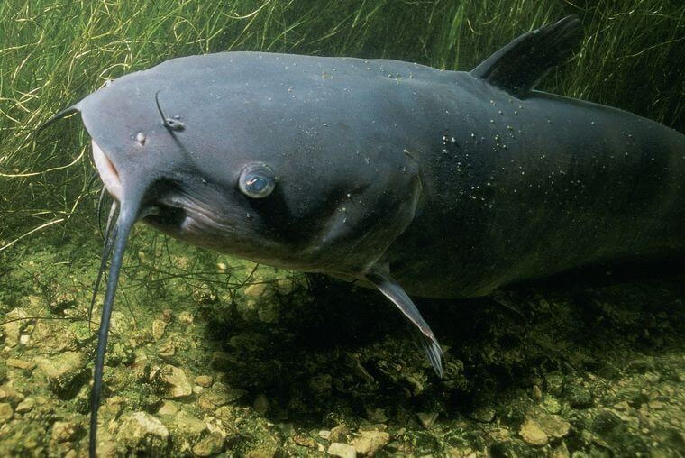
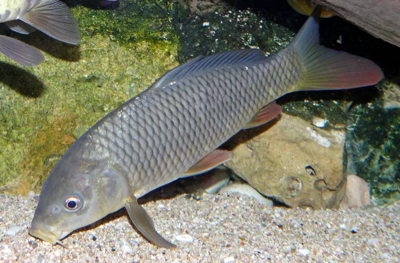

Pez depredador de agua dulce.
Tiene cuerpo largo, boca grande y muchos dientes afilados.
Se alimenta de peces, anfibios y a veces aves pequeñas.
Vive en lagos y ríos de Europa, Asia y América del Norte.

